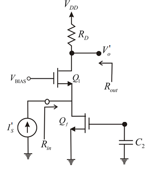
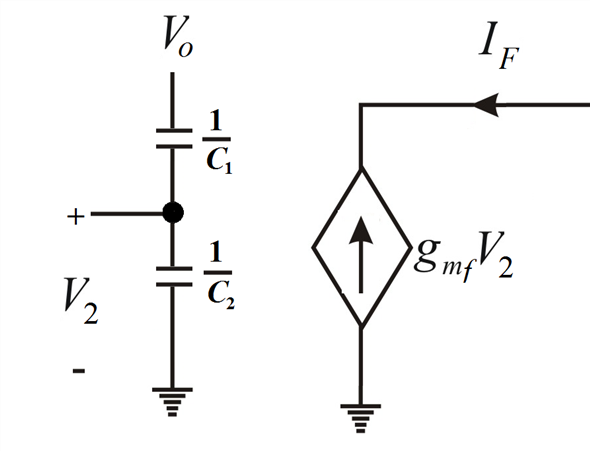

Current  is,
is,
From Figure 2, the voltage  is,
is,
Draw the A circuit for the amplifier.

Figure 1
The open loop gain of the amplifier is,
From Figure 1, the open loop gain is,
Draw the B circuit for the amplifier.

Figure 2
Current is,
From Figure 2, the voltage is,
Find the feedback gain factor:
Thus, open loop gain of the amplifier  is
is .
.
Find the closed loop gain of the amplifier.

Substitute corresponding values.
Therefore, the closed loop gain of the amplifier  is
is
Find the input resistance .
.
Therefore, the input resistance  is.
is.
Find the input resistance .
.
Therefore, the input resistance  is
is .
.